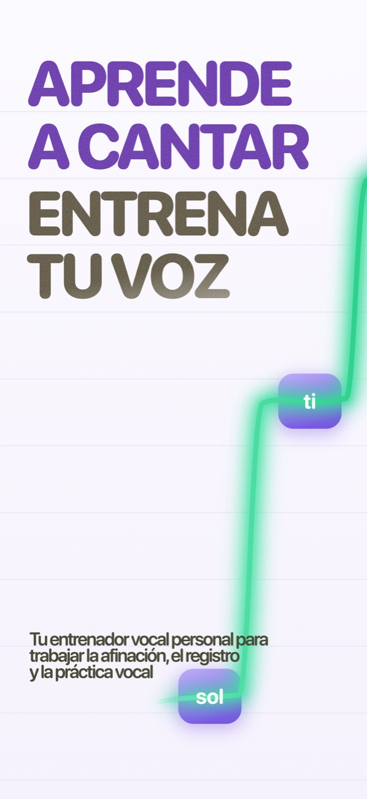
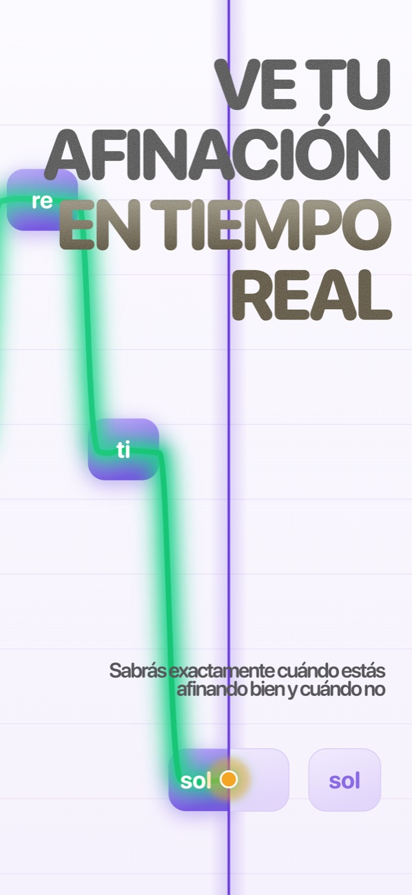
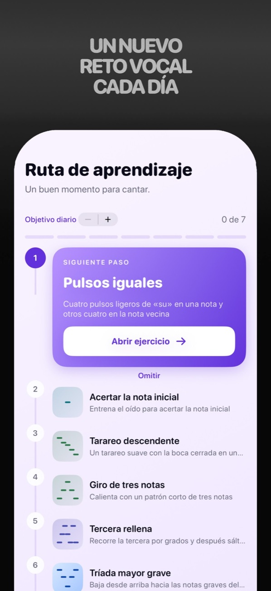
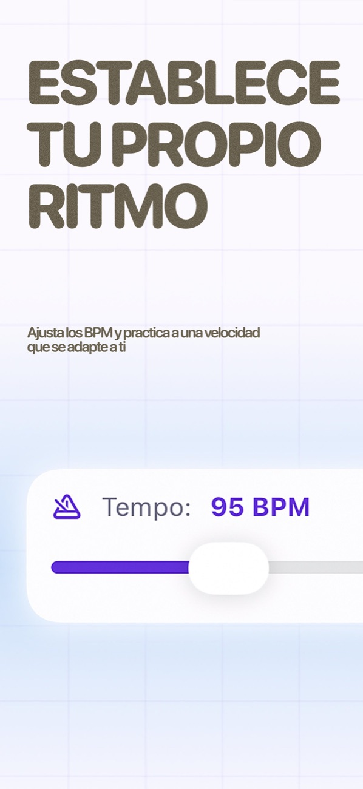

Práctica enfocada
Canu aísla el pasaje donde te atascas, te da notas de entrada y después te deja cantar de nuevo el ejercicio completo.
Canu es tu entrenador vocal personal. Aprende a afinar con seguridad, desarrolla tu voz y canta con más confianza. Paso a paso.
Canu aísla el pasaje donde te atascas, te da notas de entrada y después te deja cantar de nuevo el ejercicio completo.
Mira qué nota cantas y con qué seguridad la afinas.
Mide tu extensión vocal en directo y descubre tu tipo de voz.
Empieza con dos calentamientos y crea una rutina con ejercicios que cambian.
Tras cada ejercicio, mira qué ha mejorado y qué pasaje practicar después.
Crea escalas y secuencias de notas, elige notas y tempo y guárdalas. Canu Boogie viene como ejemplo listo para modificar.
Tu semana de práctica en un pentagrama, con los minutos de cada día.
Afinación, entrenamiento auditivo, agilidad, articulación, control del aire y más.
Cambia los BPM para ralentizar un ejercicio difícil o subir el tempo poco a poco.
Elige el aspecto que prefieras o deja que cambie automáticamente.




Tu voz se desarrolla con la práctica.
Describe brevemente tu consulta. Respondemos lo antes posible y usamos tus datos solo para atender tu solicitud.
Para poder ayudarte: indica dispositivo, versión de iOS, versión de la app y una breve descripción del problema. Una captura suele ayudar.
Canu necesita acceso al micrófono. Permítelo en los Ajustes del iPhone, en Canu. Practica en una habitación tranquila y no tapes el micrófono.
Canu solo graba si activas la grabación. Las grabaciones se quedan en tu dispositivo y puedes borrarlas en la app. Escuchar, comparar, guardar y compartir forman parte de Canu Pro.
Las compras se gestionan con tu Apple ID. En la pantalla Pro de Canu, toca «Restaurar suscripción». La suscripción se administra y cancela en los ajustes de tu Apple ID.
Solo con tu consentimiento: los datos de uso van a Google Analytics y los informes de errores a Firebase Crashlytics. Cada uno se desactiva por separado en los ajustes de Canu, con «Compartir datos de uso» y «Compartir errores». El audio no se transmite.
Elige la región en la que usas Canu.